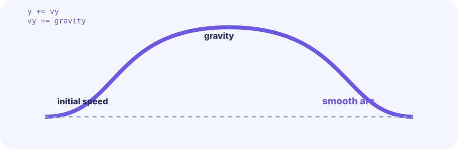
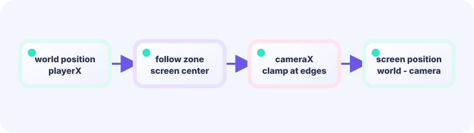

Sine oscillation
Passing time through math.Sin produces a smooth -1 to +1 cycle. Multiply by the desired range and the platform swings gently back and forth.
x = baseX + sin(t)*rangeX
★★☆☆☆ / PLAYABLE
Ride platforms that oscillate up, down, and sideways. Storing last-frame positions and forwarding the delta to the player is all it takes to keep the rider on board.
On screen you see original hero Ebi Tenjiroh; hits still use simple shapes. Movement math still lives in the same LEVEL 01 Update / Draw loop.
FIRST-TIME READER
Find where this one line is used, then follow how its value changes on screen. This is the shared Update → Draw skeleton for the whole path; the numbered steps below add one system at a time.
ONE RULE TO TRACE
Match the explanation to this line, then test the change in the game.
oldX:=platform.x; platform.x+=platform.vx; player.x+=platform.x-oldX

PLAYABLE / WEBASSEMBLY
A/D or tap the lower screen to move. Space or tap the upper screen to jump. Can you stay on while the platforms swing?
DEEP DIVE / MOVING PLATFORMS
Each platform oscillates via math.Sin. The trick is recording the position before moving. After updating, the difference between old and new position is the frame's delta. If the player is riding that platform, the same delta is added to the player. The player inherits the platform's motion for free.
Passing time through math.Sin produces a smooth -1 to +1 cycle. Multiply by the desired range and the platform swings gently back and forth.
x = baseX + sin(t)*rangeX
Before moving the platform, copy its coordinates to oldX, oldY. Subtracting those from the updated position gives the movement this frame.
p.oldX, p.oldY = p.x, p.y
Add the platform's delta directly to the player's position when the player is standing on it. The player's own velocity stacks on top.
player.x += p.x - p.oldX
TRY IT / LAB
While riding, add the platform’s movement delta to the player.
A slow-motion model of the real game rule.
TRY IT · GO
d := plat.x - plat.prevX if riding { player.x += d } plat.prevX = plat.x; plat.x += vx
—
THE ONE-LINE RULE
delta = currentPos - oldPos
then
player.pos += delta // when riding
The delta calculation is just subtraction. It works regardless of whether the platform uses sine, linear, or any other path. The same two lines handle every case.
IN THE REAL GAME
Save oldX, oldY first, then update via sine. If the player's feet were close to the platform's old top surface, mark it as the standing platform and forward the delta.
for i := range g.platforms {
p := &g.platforms[i]
p.oldX, p.oldY = p.x, p.y // snapshot
t := float64(g.frame)*.025 + p.phase
p.x = p.baseX + math.Sin(t)*p.rangeX
p.y = p.baseY + math.Sin(t)*p.rangeY
// detect rider by feet position vs old top
if math.Abs((g.player.y+g.player.h)-p.oldY) < 3 &&
g.player.x+g.player.w > p.oldX && g.player.x < p.oldX+p.w {
standing = i
}
}
if standing >= 0 {
p := g.platforms[standing]
g.player.x += p.x - p.oldX // forward delta
g.player.y += p.y - p.oldY
}WITHOUT DELTA TRANSFER
Without the delta, the player's coordinates stay fixed while the platform moves away. The floor disappears and the player falls.
WITH OLD-POSITION TRICK
Swap sine for a linear, elliptical, or scripted path and the old-position delta trick works identically — no special cases needed.
YOUR FIRST TUNING
Raise the frame coefficient .025 to speed up the swing, or change rangeX / rangeY to widen the arc. How hard can you make it before it feels unfair?
FEEDBACK